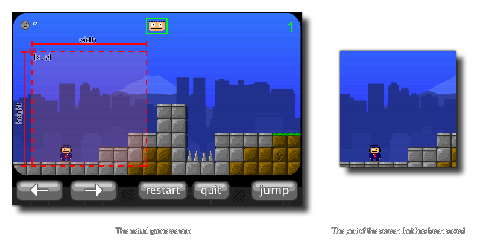

With this function you can save a screenshot of a part of the game as it currently appears in the game display. The selection coordinates are based on the absolute size of the display (or window if not fullscreen), so (0,0) is always the top left hand corner of the screen (or window). Below is an image that shows how this function works: 
The file will be saved to the working directory of the game. It is important to note that the function is designed to be called in the Draw GUI End Event, which should give consistent results across all platforms. Using it in any other event may not work as expected, and may give different results across different targets and even devices.
NOTE: This function does not work on the HTML5 target.
screen_save_part(fname,x,y,w,h);
| Argument | Description |
|---|---|
| fname | The filename for the screenshot to save |
| x | The x coordinate of the top left corner of the area of the screen to capture |
| y | The y coordinate of the top left corner of the area of the screen to capture |
| w | The width of the area of the screen to capture |
| h | The height of the area of the screen to capture |
N/A
if keyboard_check_pressed(ord("S"))
{
screen_save_part("Screens\Screen_" +
string(num++) + ".png", 0, 0, 100, 100)
}
The above code takes a screenshot of a part of the game screen that is 100 pixels square when the user presses the "S" key. This screen shot is saved to a specific folder and numbered using a variable which is then incremented.